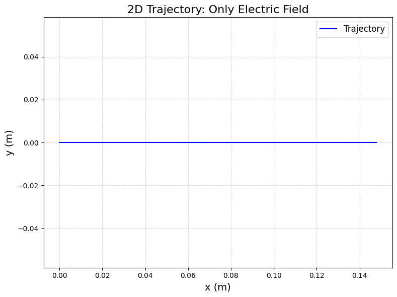
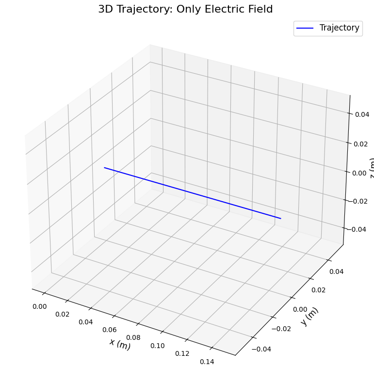
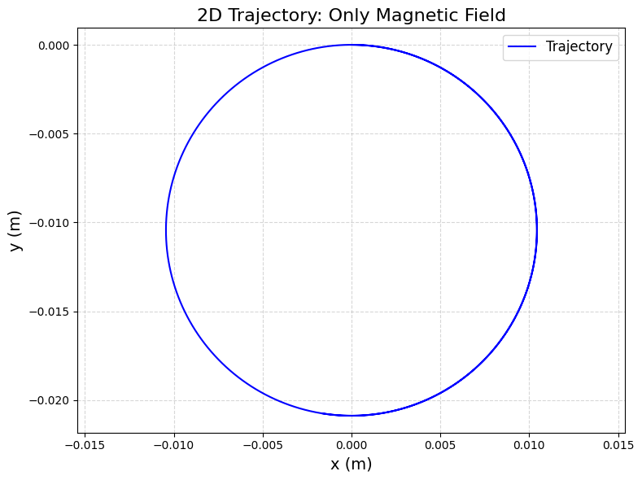
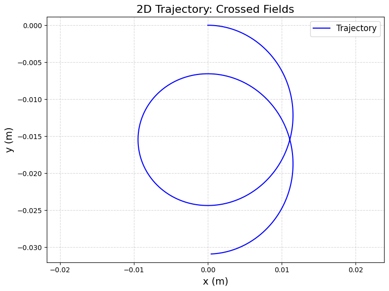
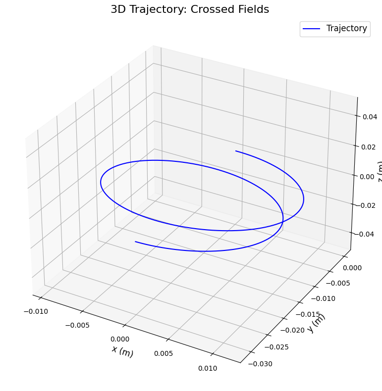
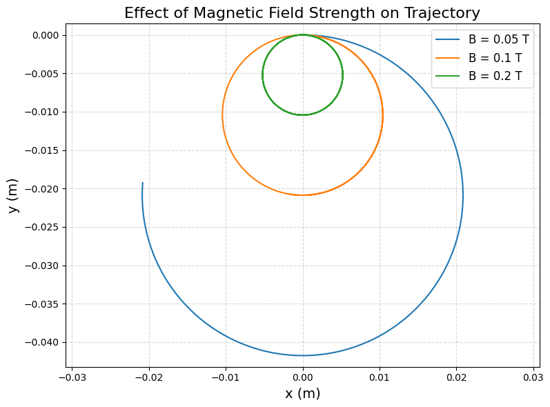
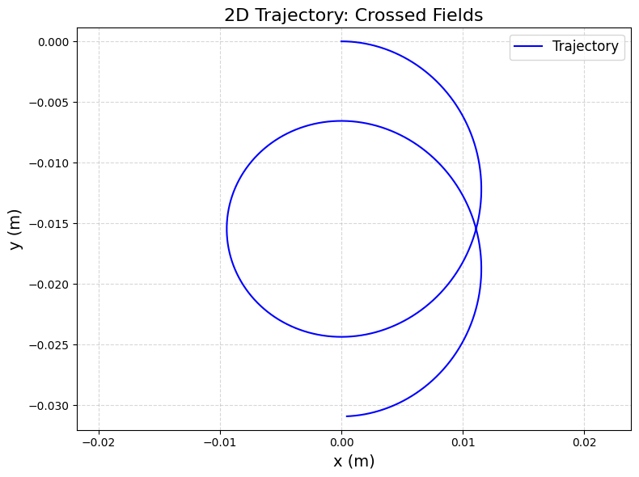
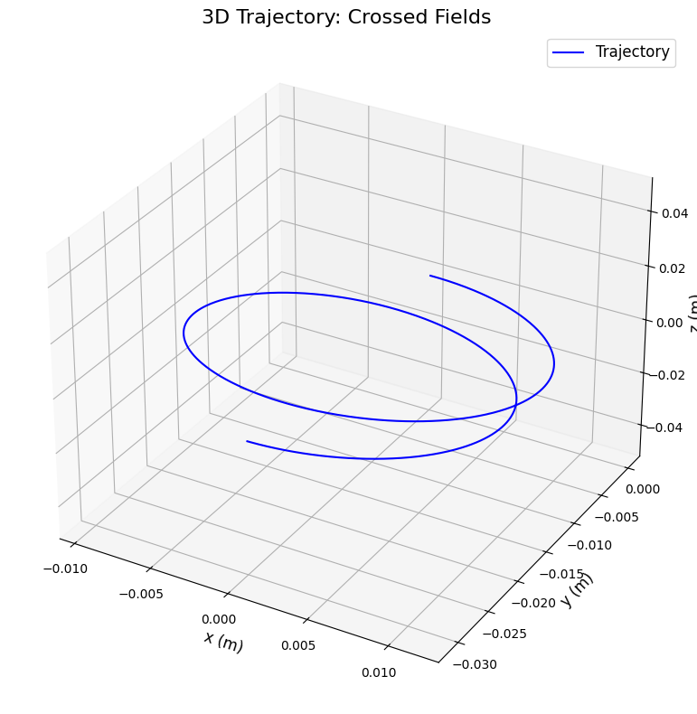
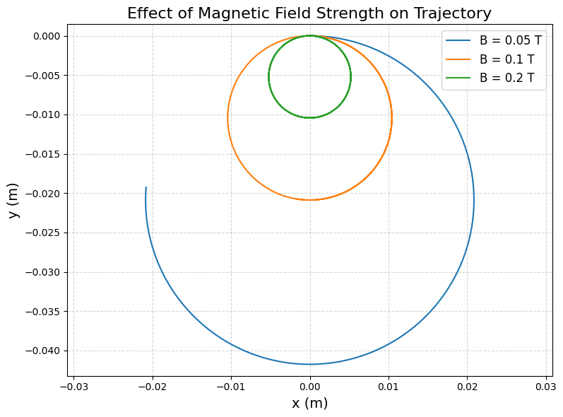

Problem 1
Simulating the Effects of the Lorentz Force
1. Understanding the Lorentz Force
The Lorentz force acts on a charged particle in electric and magnetic fields. It’s given by: $$ \mathbf{F} = q(\mathbf{E} + \mathbf{v} \times \mathbf{B}) $$ - \(q\): Charge of the particle (Coulombs)
-
\(\mathbf{E}\): Electric field (V/m)
-
\(\mathbf{v}\): Velocity of the particle (m/s)
-
\(\mathbf{B}\): Magnetic field (Tesla)
Applications
-
Particle Accelerators: The Lorentz force guides particles in devices like cyclotrons.
-
Mass Spectrometers: It separates particles by mass and charge.
-
Astrophysics: It explains how charged particles move in space (e.g., auroras).
Role of Fields
-
Electric Field (\(\mathbf{E}\)): Pushes the particle in the direction of the field.
-
Magnetic Field (\(\mathbf{B}\)): Causes circular or helical motion perpendicular to both \(\mathbf{v}\) and \(\mathbf{B}\).
2. Simulating Particle Motion
We’ll simulate the motion of a charged particle under: - A uniform electric field.
-
A uniform magnetic field.
-
Combined fields (crossed \(\mathbf{E}\) and \(\mathbf{B}\)).
Equations of Motion
Newton’s second law gives: $$ \mathbf{F} = m \mathbf{a} \quad \Rightarrow \quad m \frac{d\mathbf{v}}{dt} = q(\mathbf{E} + \mathbf{v} \times \mathbf{B}) $$ Where:
-
\(m\): Mass of the particle (kg)
-
\(\mathbf{a}\): Acceleration (m/s²)
Divide by \(m\): $$ \frac{d\mathbf{v}}{dt} = \frac{q}{m} (\mathbf{E} + \mathbf{v} \times \mathbf{B}) $$ Position updates as: $$ \frac{d\mathbf{r}}{dt} = \mathbf{v} $$
3. Parameter Exploration
We’ll vary: - Field Strengths: \(\mathbf{E}\) and \(\mathbf{B}\).
-
Initial Velocity: \(\mathbf{v}_0\).
-
Charge and Mass: \(q\) and \(m\).
Scenarios
-
Only Electric Field: \(\mathbf{E} = (E_x, 0, 0)\), \(\mathbf{B} = 0\).
-
Only Magnetic Field: \(\mathbf{E} = 0\), \(\mathbf{B} = (0, 0, B_z)\).
-
Crossed Fields: \(\mathbf{E} = (E_x, 0, 0)\), \(\mathbf{B} = (0, 0, B_z)\).
4. Python Implementation
Here’s the simulation using the Runge-Kutta method (via scipy.integrate.odeint):
import numpy as np
import matplotlib.pyplot as plt
from scipy.integrate import odeint
from mpl_toolkits.mplot3d import Axes3D # For 3D plotting
# Constants for the particle (e.g., a proton)
q = 1.6e-19 # Charge in Coulombs (proton charge)
m = 1.67e-27 # Mass in kg (proton mass)
E0 = 1e3 # Electric field strength in V/m
B0 = 0.1 # Magnetic field strength in Tesla
# Function to compute the motion (derivatives)
def lorentz_motion(state, t, q, m, E, B):
"""
Compute the change in position and velocity.
state = [x, y, z, vx, vy, vz]
E = [Ex, Ey, Ez], B = [Bx, By, Bz]
"""
x, y, z, vx, vy, vz = state
v = np.array([vx, vy, vz]) # Velocity vector
# Lorentz force: F = q(E + v x B)
E_term = q * np.array(E) / m # Acceleration from electric field
B_term = q * np.cross(v, np.array(B)) / m # Acceleration from magnetic field
# Acceleration: dv/dt = (q/m)(E + v x B)
ax, ay, az = E_term + B_term
# Velocity: dx/dt = v
return [vx, vy, vz, ax, ay, az]
# Time array for simulation
t = np.linspace(0, 1e-6, 1000) # 1 microsecond, 1000 points
# Initial conditions: [x, y, z, vx, vy, vz]
initial_state = [0, 0, 0, 1e5, 0, 0] # Start at origin, velocity along x (10^5 m/s)
# Define scenarios for different field setups
scenarios = {
'Only Electric Field': {'E': [E0, 0, 0], 'B': [0, 0, 0]},
'Only Magnetic Field': {'E': [0, 0, 0], 'B': [0, 0, B0]},
'Crossed Fields': {'E': [E0, 0, 0], 'B': [0, 0, B0]}
}
# Simulate and plot for each scenario
for scenario, fields in scenarios.items():
E, B = fields['E'], fields['B']
# Solve the motion equations
sol = odeint(lorentz_motion, initial_state, t, args=(q, m, E, B))
x, y, z = sol[:, 0], sol[:, 1], sol[:, 2] # Extract positions
# 2D Plot (x-y plane)
plt.figure(figsize=(8, 6), dpi=100)
plt.plot(x, y, 'b-', label='Trajectory')
plt.xlabel('x (m)', fontsize=14)
plt.ylabel('y (m)', fontsize=14)
plt.title(f'2D Trajectory: {scenario}', fontsize=16)
plt.legend(fontsize=12)
plt.grid(True, linestyle='--', alpha=0.5)
plt.axis('equal')
plt.tight_layout()
# Save the plot as an image (optional, for downloading in Colab)
plt.savefig(f'2D_{scenario.replace(" ", "_")}.png', dpi=100, bbox_inches='tight')
plt.show()
# 3D Plot
fig = plt.figure(figsize=(8, 8), dpi=100)
ax = fig.add_subplot(111, projection='3d')
ax.plot(x, y, z, 'b-', label='Trajectory')
ax.set_xlabel('x (m)', fontsize=12)
ax.set_ylabel('y (m)', fontsize=12)
ax.set_zlabel('z (m)', fontsize=12)
ax.set_title(f'3D Trajectory: {scenario}', fontsize=16)
ax.legend(fontsize=12)
plt.tight_layout()
# Save the 3D plot
plt.savefig(f'3D_{scenario.replace(" ", "_")}.png', dpi=100, bbox_inches='tight')
plt.show()
# Explore the effect of magnetic field strength on the trajectory
B_values = [0.05, 0.1, 0.2] # Different magnetic field strengths
plt.figure(figsize=(8, 6), dpi=100)
for B_val in B_values:
B = [0, 0, B_val] # Magnetic field along z
E = [0, 0, 0] # No electric field
sol = odeint(lorentz_motion, initial_state, t, args=(q, m, E, B))
x, y = sol[:, 0], sol[:, 1]
plt.plot(x, y, label=f'B = {B_val} T')
plt.xlabel('x (m)', fontsize=14)
plt.ylabel('y (m)', fontsize=14)
plt.title('Effect of Magnetic Field Strength on Trajectory', fontsize=16)
plt.legend(fontsize=12)
plt.grid(True, linestyle='--', alpha=0.5)
plt.axis('equal')
plt.tight_layout()
# Save the plot
plt.savefig('B_variation.png', dpi=100, bbox_inches='tight')
plt.show()
# Optional: Download the saved plots in Colab
from google.colab import files
for scenario in scenarios:
files.download(f'2D_{scenario.replace(" ", "_")}.png')
files.download(f'3D_{scenario.replace(" ", "_")}.png')
files.download('B_variation.png')
# Simulate and plot
for scenario, fields in scenarios.items():
E, B = fields['E'], fields['B']
sol = odeint(lorentz_motion, initial_state, t, args=(q, m, E, B))
x, y, z = sol[:, 0], sol[:, 1], sol[:, 2]
# 2D Plot (x-y plane)
plt.figure(figsize=(8, 6), dpi=100)
plt.plot(x, y, 'b-', label='Trajectory')
plt.xlabel('x (m)', fontsize=14)
plt.ylabel('y (m)', fontsize=14)
plt.title(f'2D Trajectory: {scenario}', fontsize=16)
plt.legend(fontsize=12)
plt.grid(True, linestyle='--', alpha=0.5)
plt.axis('equal')
plt.tight_layout()
plt.show()
# 3D Plot
fig = plt.figure(figsize=(8, 8), dpi=100)
ax = fig.add_subplot(111, projection='3d')
ax.plot(x, y, z, 'b-', label='Trajectory')
ax.set_xlabel('x (m)', fontsize=12)
ax.set_ylabel('y (m)', fontsize=12)
ax.set_zlabel('z (m)', fontsize=12)
ax.set_title(f'3D Trajectory: {scenario}', fontsize=16)
ax.legend(fontsize=12)
plt.tight_layout()
plt.show()
# Parameter variation: Effect of B on Larmor radius
B_values = [0.05, 0.1, 0.2] # Different magnetic field strengths
plt.figure(figsize=(8, 6), dpi=100)
for B_val in B_values:
B = [0, 0, B_val]
E = [0, 0, 0] # Only magnetic field
sol = odeint(lorentz_motion, initial_state, t, args=(q, m, E, B))
x, y = sol[:, 0], sol[:, 1]
plt.plot(x, y, label=f'B = {B_val} T')
plt.xlabel('x (m)', fontsize=14)
plt.ylabel('y (m)', fontsize=14)
plt.title('Effect of Magnetic Field on Trajectory', fontsize=16)
plt.legend(fontsize=12)
plt.grid(True, linestyle='--', alpha=0.5)
plt.axis('equal')
plt.tight_layout()
plt.show()



 





5. Outputs and Explanation
2D and 3D Trajectories
-
Only Electric Field: The particle moves in a straight line along the x-axis (due to \(\mathbf{E}\)).
-
Only Magnetic Field: The particle follows a circular path in the x-y plane (Larmor radius = \(mv/(qB)\)).
-
Crossed Fields: The particle drifts in the y-direction while circling (drift velocity = \(E/B\)).
Parameter Variation
- Magnetic Field Strength: Higher \(B\) makes the Larmor radius smaller (tighter circles).
Physical Phenomena
-
Larmor Radius: The radius of the circular path in a magnetic field: \(r = \frac{mv}{qB}\).
-
Drift Velocity: In crossed fields, the particle drifts at \(v_d = \frac{E}{B}\) in the direction perpendicular to both fields.
6. Discussion
-
Relation to Real Systems: Cyclotrons use magnetic fields to keep particles in circular paths. Crossed fields are used in velocity selectors.
-
Extensions: Add non-uniform fields or relativistic effects for more complex scenarios.